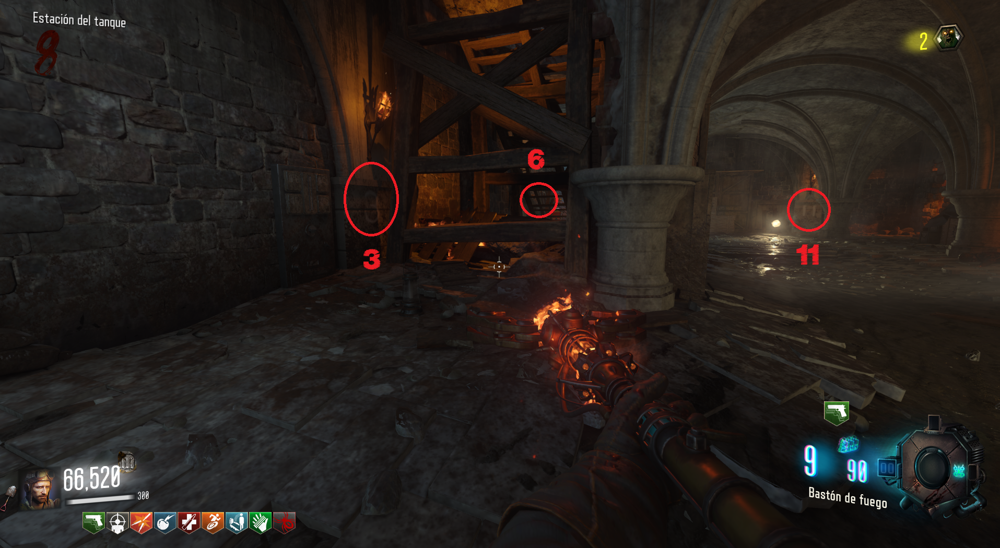

Para conseguir el bastón mejorado, deberemos de realizar una tarea en el Crazy Place y otra en Origins.
El primer paso será conseguir el disco de nuestro bastón
Estas son las posibles localizaciones:
En el banco de la iglesia.
Encima de una de las cajas del generador 6
Crazy Place:
En la zona roja del bastón de fuego veremos cuatro hogueras apagadas.
Tendremos que matar zombies cerca de ellas para encenderlas.
Origins:
Tendremos que ir a la iglesia y ver las antorchas que están encendidas.
Cada antorcha representará un número, tocará recordarlo sin importar el orden.
Después bajaremos a la zona del tanque y dispararemos a los números de las paredes que corresponden según las antorchas. Hay que hacerlo muy rápido.

El siguiente paso es ir a la zona de excavación y mover los discos al color que corresponde al bastón.
Bajaremos y veremos una piedra que tendremos que disparar con el bastón.
Iremos al Crazy Place y pondremos el bastón en su pedestal. Lo alimentaremos matando zombies y Samantha hablará cuando se complete.